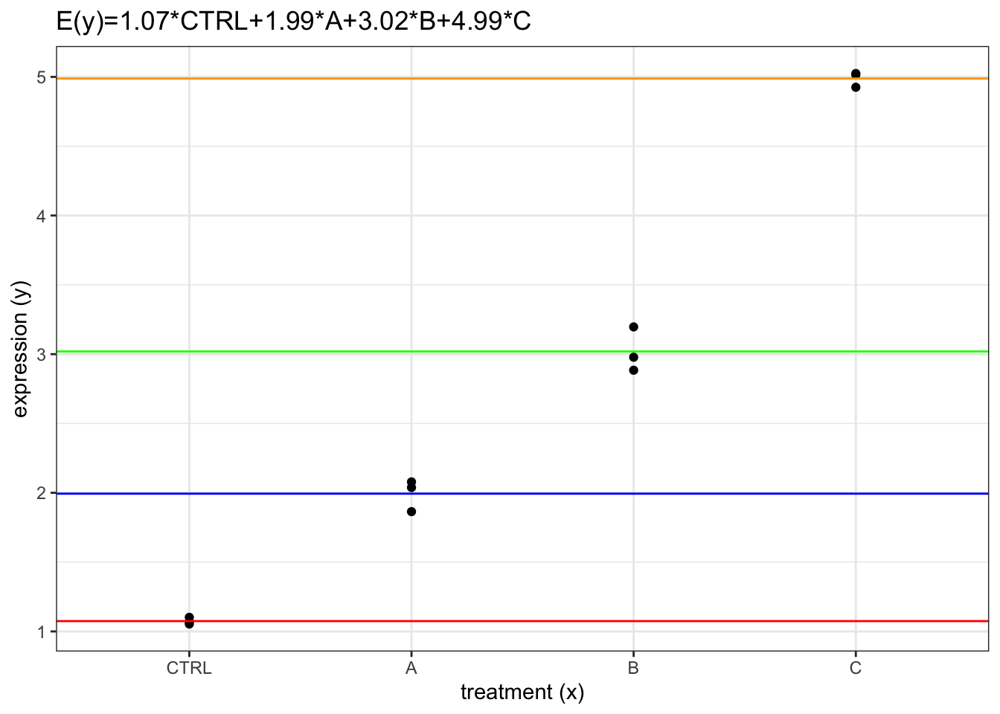
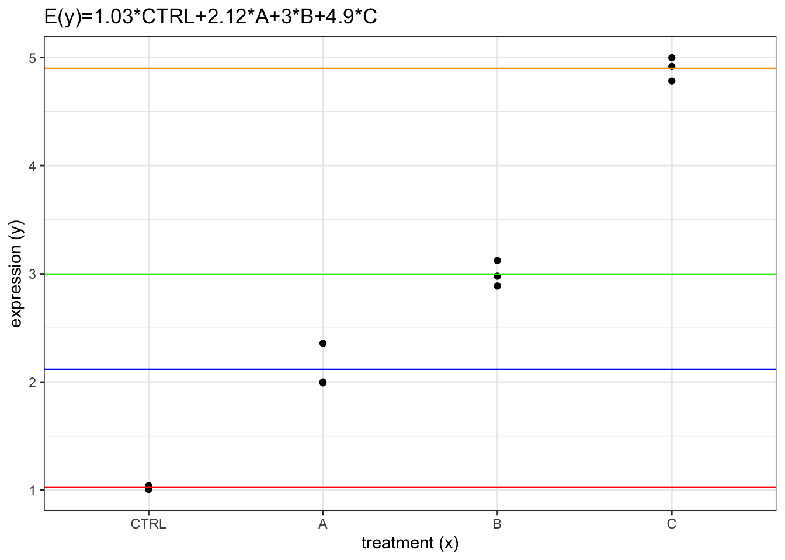

library(tidyverse)
library(magrittr)
library(broom)
library(marginaleffects)
library(limma)
theme_set(theme_bw())Regression models for statistical analysis of gene expression data
Sources
A guide to creating design matrices for gene expression experiments
RNA-seq analysis is easy as 1-2-3 with limma, Glimma and edgeR
Init
Common statistical tests are regression models
https://lindeloev.github.io/tests-as-linear/

Regression models
Regression models propose that \(y_i\) is a function of \(x_i\) and \(\beta\) with \(e_i\) representing an additive error term that may stand in for un-modeled determinants of \(y_i\) or random noise. The researcher’s goal is to estimate the function \(f(x_i, \beta)\) that most closely fits the data generation process based on the data/observations:
\[ \begin{gather} (y_i,x_i) \\ i = 1, \ldots, n \end{gather} \] Model:
\[ y_i = f(x_i, \beta) + e_i \]
For example (univariate linear regression):
\[ f(x_i, \beta) = \beta_0 + \beta_1 x_i \]
\[ y_i = \beta_0 + \beta_1 x_i + e_i \] \[ e_i \sim \mathcal{N}(\mu = 0, \sigma^2) \]
\[ y_i \sim \beta_0 + \beta_1 x_i + \mathcal{N}(\mu = 0, \sigma^2) \]
\[ y_i \sim \mathcal{N}(\mu_i, \sigma^2) \]
\[ \mu_i = \beta_0 + \beta_1 x_i = E(Y) \]

Deterministic model
\[ y = a + b x \]
set.seed(2023)
a = 2
b = 2
x = seq(2, 12, by = 2)
y = a + b * x
(data = tibble(x, y))ggplot(data, aes(x = x, y = y)) +
geom_point() +
geom_abline(intercept = a, slope = b)
Stochastic/statistical model
y = a + b * x + rnorm(n = length(x), sd = 1)
(data = tibble(x, y))ggplot(data, aes(x = x, y = y)) +
geom_point() +
geom_abline(intercept = a, slope = b)
\[ y_i \sim \mathcal{N}(\mu_i, \sigma^2) \]
\[ \begin{align} \mu_i & = \beta_0 + \beta_1 x_i \\ & = \beta_0 \cdot 1_i + \beta_1 \cdot x_i \\ \end{align} \]
R formula syntax:
\[ y \sim 1 + x \]
(design = model.matrix(y ~ 1 + x, data)) (Intercept) x
1 1 2
2 1 4
3 1 6
4 1 8
5 1 10
6 1 12
attr(,"assign")
[1] 0 1fit = lm(y ~ 1 + x, data)
tidy(fit)\[ \hat{y}_i = \hat{\beta_0} + \hat{\beta_1} x_i \]
\[ e_i = y_i - \hat{y}_i \]
ggplot(data, aes(x = x, y = y)) +
geom_point() +
geom_abline(intercept = a, slope = b) +
geom_abline(intercept = fit$coefficients[1], slope = fit$coefficients[2], color = "orange") # + geom_smooth(method = "lm", color = "orange")
Regression model for covariates
A contrast is a linear combination of parameters/statistics. Another word for a linear combination is a weighted sum.
\[ \text{expression} = \beta_0 + \beta_1 \text{age} \]
set.seed(20190429)
mouse = paste0("MOUSE", 1:6)
age = c(1,2,3,4,5,6)
expression = 2 + 0.5 * age + rnorm(n = 6, sd = 0.1)
(data = tibble(mouse, expression, age))(design = model.matrix(expression ~ 1 + age, data)) (Intercept) age
1 1 1
2 1 2
3 1 3
4 1 4
5 1 5
6 1 6
attr(,"assign")
[1] 0 1fit = lm(expression ~ 1 + age, data)
tidy(fit)model.name = paste0("E(y)=", round(fit$coef[1],2), "+", round(fit$coef[2],2), "*x")
ggplot(data, aes(y = expression, x = age)) +
geom_point() +
geom_abline(intercept = fit$coef[1],
slope = fit$coef[2],
color = "red") +
labs(title = model.name,
y = "expression (y)",
x = "age (x)")
Means model for factors
genotype = fct_relevel(rep(c("WT", "KO"), each = 3), "WT")
(data = tibble(mouse, expression, genotype))(design = model.matrix(expression ~ 1 + genotype, data)) (Intercept) genotypeKO
1 1 0
2 1 0
3 1 0
4 1 1
5 1 1
6 1 1
attr(,"assign")
[1] 0 1
attr(,"contrasts")
attr(,"contrasts")$genotype
[1] "contr.treatment"fit = lm(expression ~ 1 + genotype, data)
tidy(fit)model.name = paste0("E(y)=", round(fit$coef[1],2), "+", round(fit$coef[2],2), "*KO")
ggplot(data, aes(y = expression, x = genotype)) +
geom_point() +
geom_hline(yintercept = fit$coef[1],
color = "red") +
geom_hline(yintercept = fit$coef[1] + fit$coef[2],
color = "blue") +
labs(title = model.name,
y = "expression (y)",
x = "genotype (x)")
Mean-reference model for factors
(design = model.matrix(expression ~ 0 + genotype, data)) genotypeWT genotypeKO
1 1 0
2 1 0
3 1 0
4 0 1
5 0 1
6 0 1
attr(,"assign")
[1] 1 1
attr(,"contrasts")
attr(,"contrasts")$genotype
[1] "contr.treatment"fit = lm(expression ~ 0 + genotype, data)
tidy(fit)model.name = paste0("E(y)=", round(fit$coef[1],2), "*WT", "+", round(fit$coef[2],2), "*KO")
ggplot(data, aes(y = expression, x = genotype)) +
geom_point() +
geom_hline(yintercept = fit$coef[1],
color = "red") +
geom_hline(yintercept = fit$coef[2],
color = "blue") +
labs(title = model.name,
y = "expression (y)",
x = "genotype (x)")
avg_predictions(fit, df = insight::get_df(fit))(contrasts = makeContrasts(genotypeKO - genotypeWT, levels=colnames(design))) Contrasts
Levels genotypeKO - genotypeWT
genotypeWT -1
genotypeKO 1lmfit = lmFit(expression, design)
contrasts.fit(lmfit, contrasts)$coefficient Contrasts
genotypeKO - genotypeWT
[1,] 1.623avg_comparisons(fit, df = insight::get_df(fit))Design and contrast matrices
XXX
Studies of treatments and control
All pairwise comparisons
treatment = as_factor(rep(c("CTRL", "A", "B", "C"), each=3))
expression = rep(c(0,1,2,4), each=3) + 1
expression = expression + rnorm(length(treatment), sd=0.1)
mouse = paste0("MOUSE", 1:length(treatment))
(data = tibble(mouse, expression, treatment))(design = model.matrix(expression ~ 1 + treatment, data)) (Intercept) treatmentA treatmentB treatmentC
1 1 0 0 0
2 1 0 0 0
3 1 0 0 0
4 1 1 0 0
5 1 1 0 0
6 1 1 0 0
7 1 0 1 0
8 1 0 1 0
9 1 0 1 0
10 1 0 0 1
11 1 0 0 1
12 1 0 0 1
attr(,"assign")
[1] 0 1 1 1
attr(,"contrasts")
attr(,"contrasts")$treatment
[1] "contr.treatment"fit = lm(expression ~ 1 + treatment, data)
tidy(fit)avg_comparisons(fit, df = insight::get_df(fit))model.name = paste0("E(y)=", round(fit$coef[1],2), "+", round(fit$coef[2],2), "*A", "+", round(fit$coef[3],2), "*B", "+", round(fit$coef[4],2), "*C")
ggplot(data, aes(y = expression, x = treatment)) +
geom_point() +
geom_hline(yintercept = fit$coef[1],
color = "red") +
geom_hline(yintercept = fit$coef[1] + fit$coef[2],
color = "blue") +
geom_hline(yintercept = fit$coef[1] + fit$coef[3],
color = "green") +
geom_hline(yintercept = fit$coef[1] + fit$coef[4],
color = "orange") +
labs(title = model.name,
y = "expression (y)",
x = "treatment (x)")
(design = model.matrix(expression ~ 0 + treatment, data)) treatmentCTRL treatmentA treatmentB treatmentC
1 1 0 0 0
2 1 0 0 0
3 1 0 0 0
4 0 1 0 0
5 0 1 0 0
6 0 1 0 0
7 0 0 1 0
8 0 0 1 0
9 0 0 1 0
10 0 0 0 1
11 0 0 0 1
12 0 0 0 1
attr(,"assign")
[1] 1 1 1 1
attr(,"contrasts")
attr(,"contrasts")$treatment
[1] "contr.treatment"fit = lm(expression ~ 0 + treatment, data)
tidy(fit)avg_predictions(fit, by = "treatment", df = insight::get_df(fit))(contrasts = makeContrasts(
treatmentA-treatmentCTRL,
treatmentB-treatmentCTRL,
treatmentC-treatmentCTRL,
levels=colnames(design))) Contrasts
Levels treatmentA - treatmentCTRL treatmentB - treatmentCTRL
treatmentCTRL -1 -1
treatmentA 1 0
treatmentB 0 1
treatmentC 0 0
Contrasts
Levels treatmentC - treatmentCTRL
treatmentCTRL -1
treatmentA 0
treatmentB 0
treatmentC 1lmfit = lmFit(expression, design)
contrasts.fit(lmfit, contrasts)$coefficient Contrasts
treatmentA - treatmentCTRL treatmentB - treatmentCTRL
[1,] 1.089 1.967
Contrasts
treatmentC - treatmentCTRL
[1,] 3.871avg_comparisons(fit, df = insight::get_df(fit))model.name = paste0("E(y)=", round(fit$coef[1],2), "*CTRL", "+", round(fit$coef[2],2), "*A", "+", round(fit$coef[3],2), "*B", "+", round(fit$coef[4],2), "*C")
ggplot(data, aes(y = expression, x = treatment)) +
geom_point() +
geom_hline(yintercept = fit$coef[1],
color = "red") +
geom_hline(yintercept = fit$coef[2],
color = "blue") +
geom_hline(yintercept = fit$coef[3],
color = "green") +
geom_hline(yintercept = fit$coef[4],
color = "orange") +
labs(title = model.name,
y = "expression (y)",
x = "treatment (x)")
Control vs the rest
(contrasts = makeContrasts((treatmentA + treatmentB + treatmentC)/3 - treatmentCTRL, levels=colnames(design))) Contrasts
Levels (treatmentA + treatmentB + treatmentC)/3 - treatmentCTRL
treatmentCTRL -1.0000
treatmentA 0.3333
treatmentB 0.3333
treatmentC 0.3333fit = lmFit(expression, design)
contrasts.fit(fit, contrasts)$coefficient Contrasts
(treatmentA + treatmentB + treatmentC)/3 - treatmentCTRL
[1,] 2.309Studies of interactions and additivity of treatments
Interactions using a single factor model
Same as the multiple treatment models above but considering treatment C as the combination of treatment A and B and testing whether its effect (b3) equals the sum of the effects of A (b1) and B (b2).
fit = lm(expression ~ 0 + treatment, data)
tidy(fit)avg_predictions(fit, by = "treatment", df = insight::get_df(fit))avg_comparisons(fit, df = insight::get_df(fit))avg_comparisons(fit, hypothesis = "b3 = b1 + b2", df = insight::get_df(fit))avg_comparisons(fit, hypothesis = "b3 - b1 - b2 = 0", df = insight::get_df(fit))Interactions using a two-factor model
treat1 <- as_factor(c(0,0,0,1,1,1,0,0,0,1,1,1))
treat2 <- as_factor(c(0,0,0,0,0,0,1,1,1,1,1,1))
levels(treat1) = levels(treat2) = c("NO", "YES")
(data = tibble(mouse, expression, treat1, treat2))(design = model.matrix(expression ~ treat1 * treat2, data)) (Intercept) treat1YES treat2YES treat1YES:treat2YES
1 1 0 0 0
2 1 0 0 0
3 1 0 0 0
4 1 1 0 0
5 1 1 0 0
6 1 1 0 0
7 1 0 1 0
8 1 0 1 0
9 1 0 1 0
10 1 1 1 1
11 1 1 1 1
12 1 1 1 1
attr(,"assign")
[1] 0 1 2 3
attr(,"contrasts")
attr(,"contrasts")$treat1
[1] "contr.treatment"
attr(,"contrasts")$treat2
[1] "contr.treatment"fit = lm(expression ~ treat1 * treat2, data)
tidy(fit)avg_comparisons(fit, df = insight::get_df(fit))Additivity using a two-factor model
(design = model.matrix(expression ~ treat1 + treat2, data)) (Intercept) treat1YES treat2YES
1 1 0 0
2 1 0 0
3 1 0 0
4 1 1 0
5 1 1 0
6 1 1 0
7 1 0 1
8 1 0 1
9 1 0 1
10 1 1 1
11 1 1 1
12 1 1 1
attr(,"assign")
[1] 0 1 2
attr(,"contrasts")
attr(,"contrasts")$treat1
[1] "contr.treatment"
attr(,"contrasts")$treat2
[1] "contr.treatment"fit = lm(expression ~ treat1 + treat2, data)
tidy(fit)avg_comparisons(fit, df = insight::get_df(fit))Studies with multiple factors
Conversion to a single factor
tissue = treat1
levels(tissue) = c("LUNG", "BRAIN")
cells = treat2
levels(cells) = c("B", "T")
tissue_cells = paste(tissue, cells, sep="_")
tissue_cells = as_factor(tissue_cells)
(data = tibble(mouse, expression, tissue, cells, tissue_cells))(design = model.matrix(expression ~ 0 + tissue_cells, data)) tissue_cellsLUNG_B tissue_cellsBRAIN_B tissue_cellsLUNG_T
1 1 0 0
2 1 0 0
3 1 0 0
4 0 1 0
5 0 1 0
6 0 1 0
7 0 0 1
8 0 0 1
9 0 0 1
10 0 0 0
11 0 0 0
12 0 0 0
tissue_cellsBRAIN_T
1 0
2 0
3 0
4 0
5 0
6 0
7 0
8 0
9 0
10 1
11 1
12 1
attr(,"assign")
[1] 1 1 1 1
attr(,"contrasts")
attr(,"contrasts")$tissue_cells
[1] "contr.treatment"fit = lm(expression ~ 0 + tissue_cells, data)
tidy(fit)avg_predictions(fit, by = "tissue_cells", df = insight::get_df(fit))Accounting for factors that are not of interest
treatment = as_factor(rep(LETTERS[1:4], each=3))
lane = rep(c("L1", "L2"), c(6,6))
lane = as_factor(sample(lane, length(treatment), replace=FALSE))
technician = c("I", "II")
technician = as_factor(sample(technician, length(treatment), replace=TRUE))
(data = tibble(mouse, expression, treatment, lane, technician))(design = model.matrix(expression ~ 0 + treatment + lane + technician, data)) treatmentA treatmentB treatmentC treatmentD laneL1 technicianII
1 1 0 0 0 0 0
2 1 0 0 0 0 0
3 1 0 0 0 1 1
4 0 1 0 0 1 0
5 0 1 0 0 0 1
6 0 1 0 0 1 0
7 0 0 1 0 1 1
8 0 0 1 0 0 1
9 0 0 1 0 1 0
10 0 0 0 1 1 1
11 0 0 0 1 0 1
12 0 0 0 1 0 0
attr(,"assign")
[1] 1 1 1 1 2 3
attr(,"contrasts")
attr(,"contrasts")$treatment
[1] "contr.treatment"
attr(,"contrasts")$lane
[1] "contr.treatment"
attr(,"contrasts")$technician
[1] "contr.treatment"fit = lm(expression ~ 0 + treatment + lane + technician, data)
tidy(fit)avg_predictions(fit, by = "treatment", df = insight::get_df(fit))(contrasts = makeContrasts(treatmentB - treatmentA,
treatmentC - treatmentA,
treatmentD - treatmentA,
levels=colnames(design))) Contrasts
Levels treatmentB - treatmentA treatmentC - treatmentA
treatmentA -1 -1
treatmentB 1 0
treatmentC 0 1
treatmentD 0 0
laneL1 0 0
technicianII 0 0
Contrasts
Levels treatmentD - treatmentA
treatmentA -1
treatmentB 0
treatmentC 0
treatmentD 1
laneL1 0
technicianII 0lmfit = lmFit(expression, design)
contrasts.fit(lmfit, contrasts)$coefficient Contrasts
treatmentB - treatmentA treatmentC - treatmentA treatmentD - treatmentA
[1,] 1.12 1.951 3.822avg_comparisons(fit, variables = c("treatment"), df = insight::get_df(fit))Studies with multiple covariates (and factors)
XXX
sessionInfo()R version 4.2.2 (2022-10-31)
Platform: x86_64-apple-darwin17.0 (64-bit)
Running under: macOS Big Sur ... 10.16
Matrix products: default
BLAS: /Library/Frameworks/R.framework/Versions/4.2/Resources/lib/libRblas.0.dylib
LAPACK: /Library/Frameworks/R.framework/Versions/4.2/Resources/lib/libRlapack.dylib
locale:
[1] en_US.UTF-8/en_US.UTF-8/en_US.UTF-8/C/en_US.UTF-8/en_US.UTF-8
attached base packages:
[1] stats graphics grDevices utils datasets methods base
other attached packages:
[1] limma_3.54.2 marginaleffects_0.11.0 broom_1.0.4
[4] magrittr_2.0.3 lubridate_1.9.2 forcats_1.0.0
[7] stringr_1.5.0 dplyr_1.1.0 purrr_1.0.1
[10] readr_2.1.4 tidyr_1.3.0 tibble_3.2.0
[13] ggplot2_3.4.1 tidyverse_2.0.0
loaded via a namespace (and not attached):
[1] Rcpp_1.0.10 compiler_4.2.2 pillar_1.8.1 tools_4.2.2
[5] digest_0.6.31 checkmate_2.1.0 timechange_0.2.0 jsonlite_1.8.4
[9] evaluate_0.20 lifecycle_1.0.3 gtable_0.3.1 pkgconfig_2.0.3
[13] rlang_1.1.0 cli_3.6.0 rstudioapi_0.14 yaml_2.3.7
[17] xfun_0.37 fastmap_1.1.1 withr_2.5.0 knitr_1.42
[21] generics_0.1.3 vctrs_0.6.0 htmlwidgets_1.6.1 hms_1.1.2
[25] grid_4.2.2 tidyselect_1.2.0 data.table_1.14.8 glue_1.6.2
[29] R6_2.5.1 fansi_1.0.4 rmarkdown_2.20 farver_2.1.1
[33] tzdb_0.3.0 backports_1.4.1 ellipsis_0.3.2 scales_1.2.1
[37] htmltools_0.5.4 insight_0.19.0 colorspace_2.1-0 labeling_0.4.2
[41] utf8_1.2.3 stringi_1.7.12 munsell_0.5.0